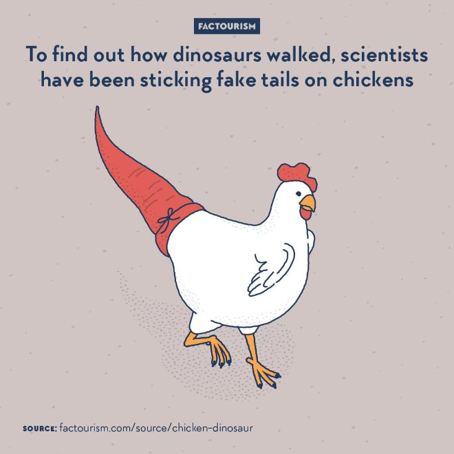
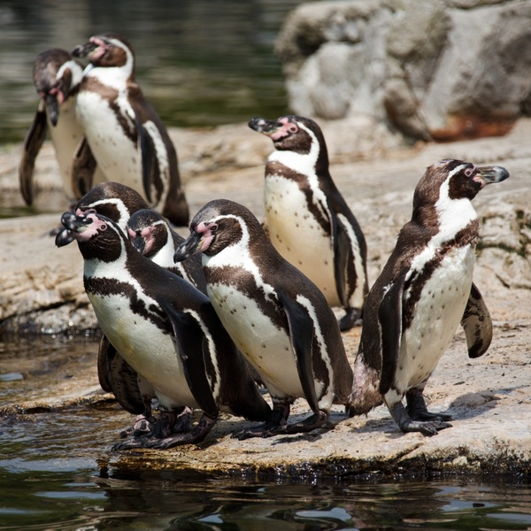

Welcome to my collection of useless facts. Keep scrolling to start reading!
Movie Facts-Food Facts-Animal Facts-Literature Facts
Movie Facts

1. Barbie and Ken broke up in 2004. (They got back together in 2011.)
2. Movie trailers got their name because they were originally shown after the movie.
3. Toy Story helped sell the Etch-a-Sketch.
Click here for more movie facts.
Food Facts
1. 3.6 cans of Spam are consumed each second.
2. Taco Bell was named after its owner, Glen Bell.
3. Pound cake originally included a pound of all of its ingredients.
Click here for more food facts.
Animal Facts
1. Emus and kangaroos cannot walk backward.
2. Flamingos can only eat with their heads upside down.
3. A group of hippos is called a “bloat.”
Click here for more animal facts.
Literature Facts

1. A Harry Potter book filled with typos sold for $90,000.
2. Sleeping through summer is called “estivation."
3. Rainbows were called “bows of promise” in Victorian English.